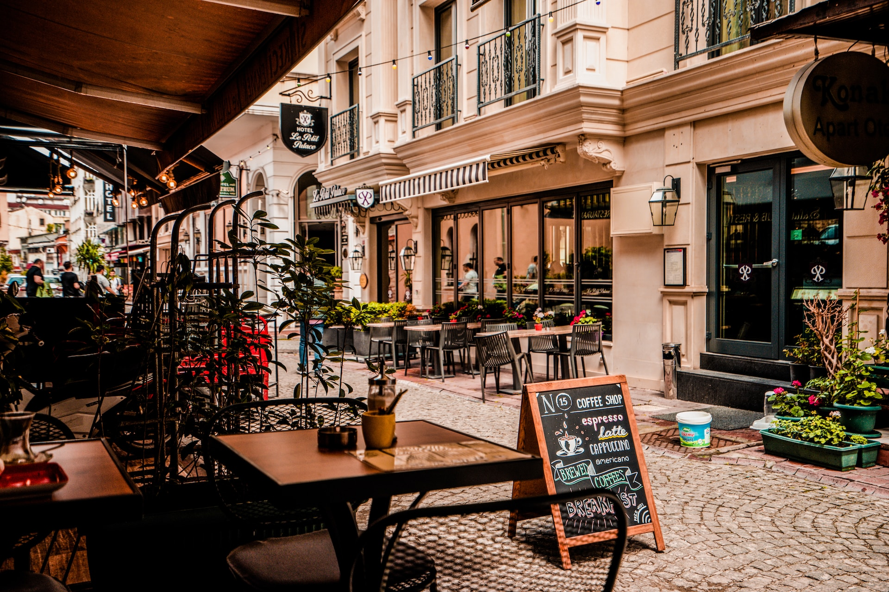

Concept
都会の喧騒を忘れ、心地よい癒しの場を提供する都市のオアシス。
リラックスできるクリエイティブスペース、定期的なアート展示や
イベントで文化と交流を育む場所。
Avenue Café
は都会の喧騒を忘れさせ、訪れる人々に心地よい休息と癒しを提供する場所です。
店内は自然光が差し込む明るい空間であり、緑豊かな植物やナチュラルな素材を使用したインテリアが特徴です。
メニューはオーガニックで新鮮な食材を使用し、ヘルシーかつ美味しい料理やドリンクを提供します。
また、Avenue Café
ではゆったりとした雰囲気の中で本を読んだり、友人との会話を楽しんだり、
クリエイティブな作業をしたりすることができるスペースも提供します。
忙しい都会の中でほっと一息つける、リラックスできる場所として、
訪れる人々に心地よい時間と体験を提供します。
Our Unique
-
アーティスティックな癒しの場
都会の喧騒から離れて心地よい癒しの場を提供します。 アートやデザインにインスパイアされた内装やインテリアが特徴であり、 ゲストは創造的な雰囲気に包まれながらくつろげる空間を体験できます。

-
健康と持続可能性へのこだわり
オーガニックや地元の新鮮な食材を活用した健康的で美味しい メニューを提供します。食事やドリンクに使用する材料の選択には持続可能性と環境への配慮が 重視され、地球と身体に優しい選択がされています。

-
文化と交流の場
定期的なアート展示やパフォーマンス、ワークショップなどのイベントを通じて、 地元のアーティストやクリエイター、そしてコミュニティメンバー同士が交流し、 刺激を受け合うことができます。

-

クリエイティブな学びと成長の場
ワークショップやセミナー、ディスカッションイベントなどを開催し、 ゲストに新たなスキルや知識を提供します。アーティストや専門家からの指導や助言を通じて、 個々の才能や創造性の向上を促し、自己表現やアイデアの実現に対するサポートを行います。